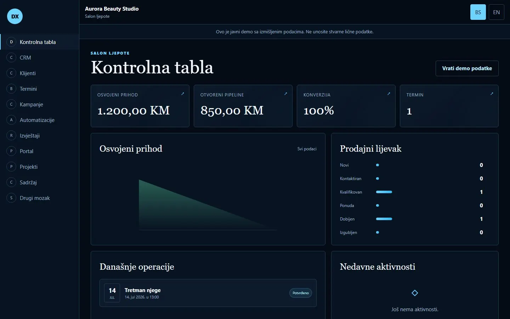

Dashboard
Prihod, pipeline, konverzija, rokovi i prioriteti na jednom mjestu.
Klijenti, prodaja, projekti, zadaci, termini, kampanje, automatizacije i znanje povezani su u aplikaciju napravljenu prema načinu na koji vaš tim stvarno radi.
Javni demo koristi isključivo izmišljene podatke. Ne unosite stvarne lične ili poslovno povjerljive podatke.

Pregledajte stvarne ekrane mini aplikacije. Svaki modul koristi isti poslovni kontekst, pa promjena u jednom dijelu može ažurirati cijeli sistem.
Ne morate kupiti sve odjednom. Biramo module koji rješavaju najveći trenutni problem i povezujemo ih u fazama.
Prihod, pipeline, konverzija, rokovi i prioriteti na jednom mjestu.
Leadovi, faze prodaje, naredne akcije, izvori i istorija odnosa.
Profil klijenta, projekti, vrijednost, dokumenti i aktivnosti.
Rezervacije, narudžbe, angažmani ili drugi tokovi specifični vašoj branši.
Status, vlasnik, rokovi, zadaci i blokade bez statusnog prepisivanja.
Trošak, leadovi, prihod i atribucija povezani sa stvarnim prodajnim tokom.
Ideje, nacrti, odobrenja, raspored i objava kao jasan proces.
Okidači, uslovi, akcije, testiranje i kontrolisan trag izvršenja.
Periodi, trendovi, konverzija, kampanje i siguran izvoz podataka.
Odobreni projekti, poruke, dokumenti, odluke i sljedeći koraci za klijenta.
Povezano znanje, izvori, pretraga i kontekst koji ne nestaje odlaskom člana tima.
Privatni poslovni asistent koji objašnjava podatke, pronalazi kontekst i predlaže odobrene naredne poteze.
Demo pokazuje širinu mogućnosti. Produkcijska verzija se definiše prema vašim ljudima, pravilima, podacima, rizicima i sistemima koje već koristite.
Zatražite procjenuNazivi modula, statusi, metrike, obrasci i workflowi prate vaš način rada.
Vlasnik, menadžer, član tima i klijent vide i rade samo ono što im pripada.
Email, kalendar, CRM, računovodstvo, dokumenti, web forme i odobreni vanjski sistemi.
Sigurne komande, potvrde, zapis aktivnosti, izvori i jasna pravila kada sistem mora stati.
Vaše boje, tipografija, domen, klijentski portal i višejezično iskustvo.
Demo sadrži šest verzija koje pokazuju kako isti sistem mijenja metrike, procese i jezik prema poslovnom modelu.
Razumijemo korisnike, probleme, podatke, odobrenja i cilj prve verzije.
Prije punog razvoja prolazite kroz stvarne ekrane i ključne tokove.
Prvo isporučujemo najveću vrijednost, zatim povezujemo naredne module i integracije.
Pošaljite nam cilj, trenutne alate i najveću operativnu prepreku. Dobit ćete prijedlog faza, funkcija i realnu procjenu cijene.